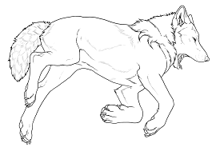

- SUGOI! Software Used for Ontology Interchangeability Tool: SUGOI!
- Community page for users to upload ontologies/alignments: Community
- Extended ontology alignment metadata: Alignment metadata
- Extended ontology ontology metadata: Ontology metadata
- Extended ontology alignment metadata search: Alignment metadata search
- Extended ontology ontology metadata search: Ontology metadata search
ROMULUS
ROMULUS is a foundational ontology repository aimed at improving semantic interoperability. Currently there are three foundational ontologies in the repository: DOLCE, BFO and GFO.
How to cite ROMULUS:
Cite the following paper: Khan, Z., Keet, C.M. The foundational ontology library ROMULUS. 3rd International Conference on Model & Data Engineering (MEDI'13). September 25-27, 2013, Amantea, Calabria, Italy. Springer LNCS (accepted).ROMULUS Documentation:
Documentation for ROMULUS.Publications
- Khan, Z., Keet, C.M. The foundational ontology library ROMULUS. 3rd International Conference on Model & Data Engineering (MEDI'13). September 25-27, 2013, Amantea, Calabria, Italy. Springer LNCS (accepted). pdf
- Khan, Z., Keet, C.M. Addressing issues in foundational ontology mediation. 5th International Conference on Knowledge Engineering and Ontology Development (KEOD'13), Vilamoura, Portugal, 19-22 September. (in press). pdf
- Khan, Z., Keet, C.M. Toward semantic interoperability with aligned foundational ontologies in ROMULUS. Seventh International Conference on Knowledge Capture (K-CAP'13), ACM proceedings. 23-26 June 2013, Banff, Canada. (poster/demo). pdf
- Khan, Z., Keet, C.M. ONSET: Automated Foundational Ontology Selection and Explanation. 18th International Conference on Knowledge Engineering and Knowledge Management (EKAW'12), A. ten Teije et al. (Eds.). Oct 8-12, Galway, Ireland. Springer, Lecture Notes in Artificial Intelligence LNAI 7603, 237-251. pdf
Features of ROMULUS
- It provides a high-level view of the foundational ontologies with only the most general concepts common to all implemented foundational ontologies.
- Foundational ontologies in ROMULUS are modularised
- Foundational ontology mediation has been performed. This includes alignment, mapping and merging of foundational ontologies.
- ROMULUS provides detailed taxonomies of each foundational ontology to allow easy browsing of foundational ontologies.
- ROMULUS allows you to download each foundational ontology module including the integrated foundational ontologies.
- Metadata of each foundational ontology is available for you
- A comparison of the included foundational ontologies is available